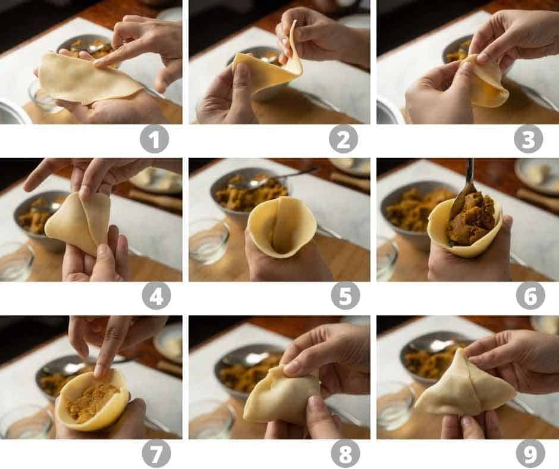

Samosa

Ingredients required
For the dough
- All purpose flour
- Ghee
- Water
- Salt
For the Filling
- Mashed Potatoes
- Coriander Seeds
- Ginger
- Garlic
- Salt
- Coriander Seeds
- Saunf
- Turmeric
- Amchur
- Garam Masala
- Red Chilli
- Greeen Chilli
- Curry Leaves
Making the dough
Mix the flour, salt and ghee until the mixture is crumbly and then
keep adding water little by little to the mixture until the dough is
formed
Note:
- Don't over knead or your samosas will be tough instead of crispy
- Its okay if you can see small pockets of ghee in your dough
- Its normal for the dough to have dimples or cracks. It need not be smooth
- The dough should be kneaded in a way that its stiff. That's what helps
form the crispy crust. If your dough is too soft, you've added too much
water and this will
make it difficult to wrap samosas and the crust won't be crispy
- Mix and mash
- Add the curry leaves
Wrapping the samosa is shown well in the given image
